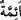

mânâsı, “Allah’ın onları kendilerine göz aydınlığı kılmasıdır.”
Bazıları demiştir ki: “Allah’ın kullarına nimetleri çoktur. Bunların en değerlisi
evlâdların necib ve asil olmasıdır.”
Şeyh Sa‘dî (k.s.) der ki:
Güzel, itâatkâr ve zâhid bir kadın
Yoksul bir adamı padişah eder
Güzel bir kadın iffetli de olursa
Kocası ona baktıkça kendini cennette bilsin
“ve bizi takvâ sâhiplerine önder kıl!” yâni ilim vererek ve amele muvaffak kılarak
dînî görev ve sorumlulukları yerine getirme konusunda takvâ ehli bize tâbi olacak
şekilde bizi imam ve önder kıl. “derler.”
“ (imam)”, sözüne ve fiiline uyulan bir insan, kitap veya başka bir şey olsun, ister
hak üzere ister bâtıl üzere olsun kendisine uyulan şeye denir. Nitekim el-Müfredât’ta
böyle geçmektedir.
el-İrşâd’da der ki: “Âşikârdır ki bu söz onlardan münferiden sâdır olmuş ve her biri
duâ ederken “Beni takvâ sâhiplerine önder kıl” diye duâ etmiştir. Ancak veciz olması
için birinci çoğul siygası ile ifâde edilmiştir. Bu tıpkı “Ey Peygamberler, temiz olan
şeylerden yiyin” (el-Mü’minûn, 23/51) âyetinin üslûbu üzeredir. İmam/önder kelimesi
ise olduğu gibi bırakılmış ve “ (önderler)” buyrulmamıştır.”
Bu yedi âyetin kendinden önceki âyete atfedilmesi yeterliyken “ ism-i mevsûlü
tekrar edilerek bağlanması, bu âyetlerde zikredilen hususlardan her birinin ayrı ayrı ele
alınmaya lâyık önemli vasıflar olduğunu, onlardan hiçbirinin diğerini tamamlamak için
zikredilmediğini bildirmek içindir.
Kaffâl ve bir müfessirlerden bir topluluk der ki: “Bu âyet dinde önderlik taleb
etmenin vâcib olduğuna deâlet eder. Urve (r.h.)’dan nakledildiğine göre o Allah’ın
kendisini kendisinden ilim aktarılan kimselerden kılması için duâ ederdi. Sonunda duâsı
kabul olundu. Dünya işlerinde önderliğe ve baş olmaya gelince, sünnet olan kadılık,
emirlik, müftülük ve bir toplumun efendisi olma gibi vazifeleri gönülden bekleyerek ve
isteyerek almamasıdır. Ancak şiddetli tehdid ile onları almaya zorlanırsa o başka.
Öncekiler bu görevleri kabul etmemişlerdir, sonrakiler nasıl kabul edebilirler?!
Ebû Hanîfe kadılık yapmadan ölüp gitti
Sen kadılık yapmazsan öleceksin
Fakir (Bursevî) der ki: Eğer “Şeyh Medyen (k.s.)’un “Sıddîklerin başından en son
çıkan şey makam sevgisidir.” şeklindeki sözünde ‘çıkmak’ zuhûr etmek (ortaya çıkmak)
diye de açıklanır. O zaman bu sözün mânâsı nedir?” dersen, şöyle cevap veririm: